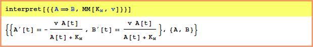
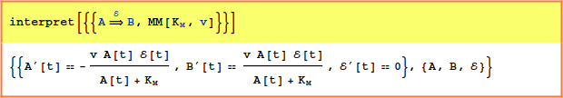
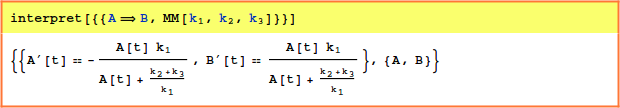
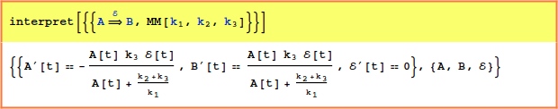
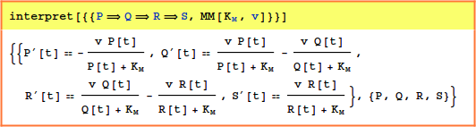

| MM (Michaelis-Menten Reactions) | Reference Home |
MM is an uninstantiated function used to indicate parameter values for a Michaelis-Menten-Henri style equation formula
There are a total of four basic templates for this class of reaction, two in which an enzyme is specified and two in which the enzyme concentration is rolled into the overal velocity of the reaction. These are further subdivided into a pair of templates in which the the standard Michaelis rate constants KD and reaction rate are know known:


In the other two templates, the Michaelis constant is calculated from the mass action rate constants as KD = (k2+k3)/k1


Michaelis Menten Reactions can be entered in cascades, e.g.,

or